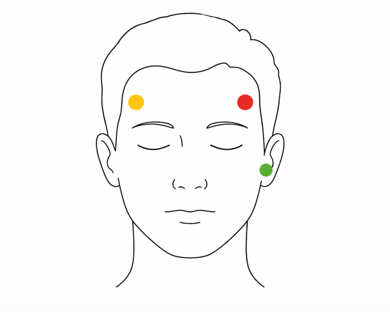

Live Signal Feed
Primary Trace
20
0
-20
0s
5s
10s
15s
Electrode Placement
Setup Guide

Placement: Red on right, yellow on left, green on earlobe or side of neck.
- Peel each electrode off slowly so the conductive gel stays intact.
- Wipe the skin first and let it dry before applying the pads.
- Press each electrode down for a few seconds to improve contact.